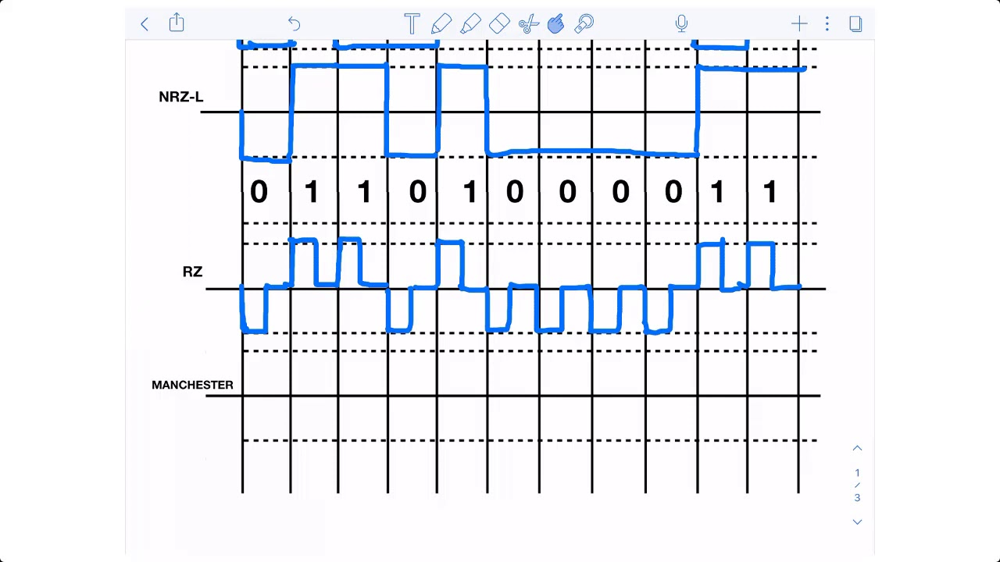

Introducción
Los códigos de línea permiten representar datos digitales en forma de señales eléctricas. Stallings los considera esenciales en transmisión digital.
Desarrollo
Existen múltiples códigos diseñados para sincronización y control de errores. Forouzan explica que cada uno ofrece ventajas específicas.


Conclusión
En conclusión, los códigos de línea facilitan una transmisión digital confiable.